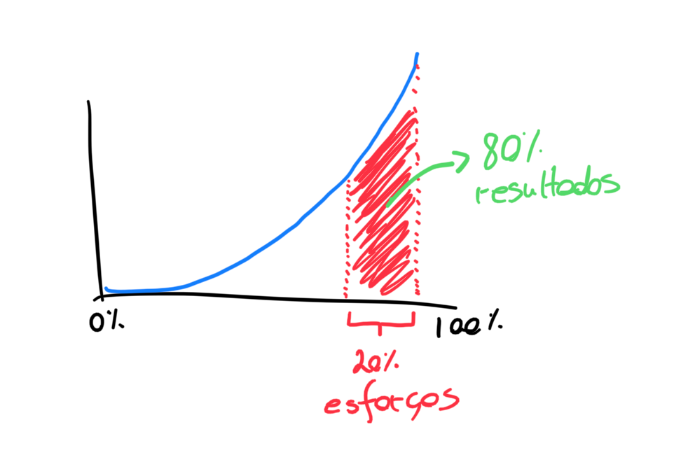
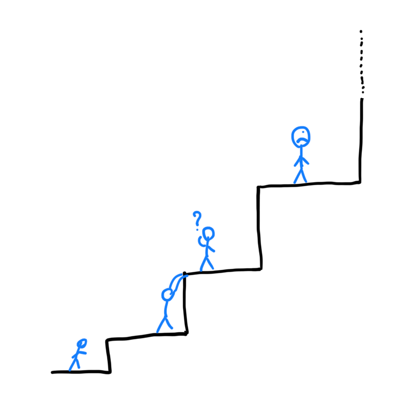
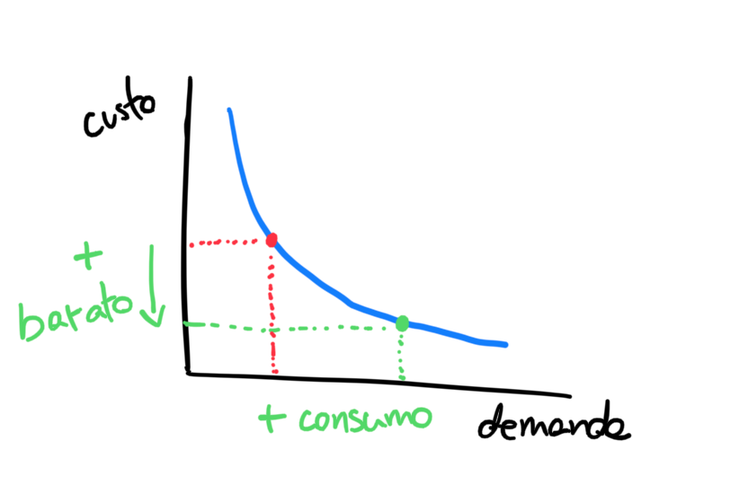
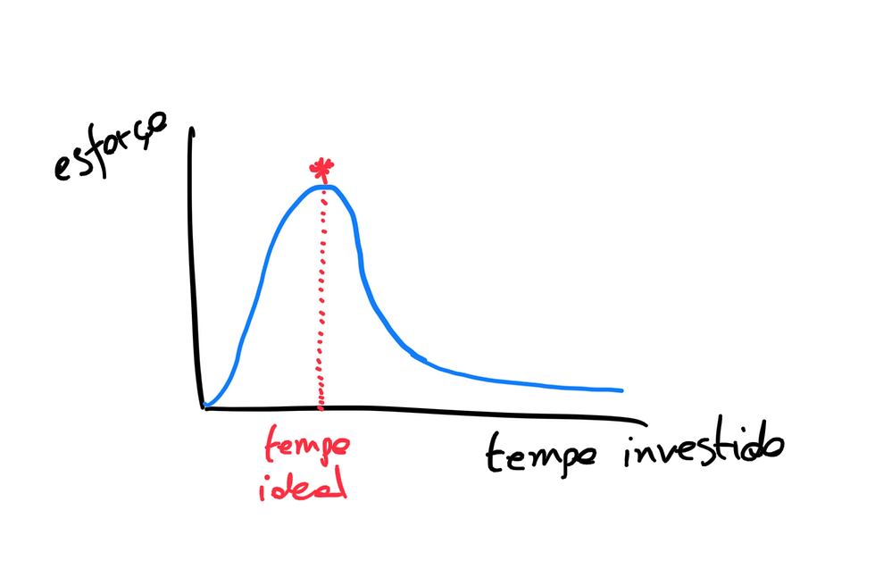

A Física da Produtividade (ou a Inteligência da Preguiça) - Parte 1/2
2023-08-28

"Eu não tenho nenhum talento especial. Sou apenas apaixonadamente curioso" - Albert Einstein
Eu sempre me impressiono com o quanto as coisas mais valiosas de se aprender são geralmente ignoradas pela educação formal. Ao contrário do que ouço falar por aí, não sou contra ensinar sobre equações de segundo grau ou mitocôndrias. O que eu acho estranho é que o ser humano, apesar de complexo, é um bicho relativamente previsível. Isso significa que a gente sabe mais ou menos os desafios que vai encontrar na vida: desenvolver boas relações, gerir recursos financeiros para não passar dificuldade ou cuidar da saúde para viver bem.
Dentre todos esses, tem uma coisa que ninguém nos ensina: trabalhar. Claro que ensina em aspectos específicos e tarefas como limpar a casa ou mexer no Excel. O que ninguém nos ensina é como o trabalho funciona na prática e como podemos ir bem nele independente da tarefa em questão. Produzir é algo que se espera de todo mundo de alguma forma, seja mais ou menos tangível.
De vez em quando vejo pessoas criticando a apologia à produtividade, dizendo que é essa nossa mania de querer fazer mais e mais que cria uma geração de workaholics e degrada o planeta. Discordo. Isso não é criticar produtividade, é criticar produção . Enquanto produção é algo normalmente mensurado de forma absoluta (o quanto foi produzido), a produtividade é medida de forma relativa (o quanto foi produzido comparado com o esforço de produzir). Produtividade, portanto, tem a ver com encontrar formas mais inteligentes e eficientes de se chegar a um objetivo de produção. É mais sobre os meios do que sobre os fins. Os fins são fundamentais, mas muitas vezes são os meios que nos esgotam.
O cérebro tem a incrível capacidade de buscar por eficiência nos meios. Nossa inteligência não vem só da vontade de aprender mais coisas, mas, principalmente, do desejo de tentar se fazer mais com menos. Pense na invenção da roda e o como era o mundo antes dela. A mesma coisa vale para carros, computadores e software. Tudo tem a ver com economizar energia. Poderia dizer que nossa inteligência é movida pela preguiça ativa .
Assim como você, eu tenho alguma experiência com trabalho. O que me faz tentar ir um pouco além aqui é observar essa experiência e atuar para melhorá-la, o que tenho feito como empreendedor e consultor nos últimos dez anos. Essa curiosidade me levou a buscar por estudos e teorias sobre como a produtividade funciona e, por isso, começo aqui uma série sobre a Física da Produtividade - um nome bonito para ideias que nos ajudam a entender como a produtividade de funciona.
Algumas leis, princípios e paradoxos nos ajudam a trazer exemplos reais e possíveis soluções para os dilemas que encontramos. Por isso, vamos começar com um básico:
1. Regra 80/20 ou Princípio de Pareto

O Princípio de Pareto, frequentemente conhecido como a regra 80/20, é um conceito fundamental em estudos de produtividade e gestão do tempo. Originado pelo economista italiano Vilfredo Pareto, ele sugere que, em muitos casos, cerca de 80% dos efeitos ou resultados são originados por apenas 20% das causas ou esforços. Por exemplo, é comum encontrar situações em que mais ou menos 80% das vendas são geradas por cerca de 20% dos clientes. Da mesma forma, em tarefas pessoais e profissionais, frequentemente apenas 20% das atividades são responsáveis por 80% dos resultados desejados. Apesar de não ser uma “lei” e sim um princípio, a aplicação dele pode ser resumida por: descubra onde está o que realmente funciona e coloque seu esforço naquilo.
2. Princípio de Peter

Você já deve ter escutado falar sobre a Síndrome do Impostor, no qual a pessoa não consegue reconhecer suas conquistas como fruto da sua capacidade e cria a ilusão de que não merecia estar onde está. Infelizmente ela é justificável pelo Princípio de Peter. Laurence J. Peter em 1969, afirmou que empregados são promovidos até atingirem seu "nível de incompetência," ou seja, um cargo onde não são mais eficazes.
A questão aqui é perceber que as promoções frequentemente se baseiam no desempenho passado, e não na aptidão para novas responsabilidades. Sabe quando alguém diz: “fulano era um ótimo técnico e foi promovido a um péssimo líder”. Isso é sintoma de que tentamos extrair o máximo dos outros (e de nós mesmos) até o ponto em que percebemos que o que é demandado para aquela posição é maior do que os recursos disponíveis pela pessoa para a exercer.
As organizações precisam aprender a criar formas de crescer que podem até ser justificadas por resultados passados, mas precisam estar sustentadas em resultados futuros (em outras palavras, potencial). A ironia reside no fato de que as empresas normalmente oferecem capacitação para as pessoas com menos experiência e aquelas que ascendem a posições mais elevadas tendem a ser vistas como as que não precisam mais de treinamentos ou orientação quando, na verdade, são as que mais precisam.
Portanto, o termo chave, seja internamente para quem está se desenvolvendo, seja para a organização que oferece capacitações é: humildade exponencial* . Quanto mais se aprende, mais se cria abertura para aprender. O contrário disso é o que gera estagnação, arrogância e limita os resultados pessoais e organizacionais. No nível individual, é o hábito de questionar suas habilidade que faz com que esse princípio não se aplique a você. Ou, como disse Mark Twain:
"Não é o que você não sabe que te prejudica, mas sim aquilo que você tem certeza que é verdade quando não é."
*Essa é uma ideia que ainda vamos explorar mais em um próximo artigo
3. Paradoxo de Jevon

Você planejava gastar até 50 reais com cerveja numa festa em que cada lata custava 10 reais, o que te permitiria tomar 5 cervejas. Porém, quando você chega na festa, descobre que a cerveja está em promoção pelo valor de 5 reais. O que é mais provável de acontecer:
a) Tomar apenas 5 cervejas e gastar 25 reais em vez de 50.
b) Tomar 10 cervejas e gastar os mesmos 50 reais planejados.
c) Perder a linha e dizer “tá barato, vou aproveitar” e tomar 30 cervejas, gastar 150 reais e sair carregado em coma alcoólico.
O Paradoxo de Jevon é uma observação no campo da microeconomia que sugere que o aumento da eficiência na utilização de um recurso leva, paradoxalmente, a um aumento no consumo desse recurso, em vez de uma diminuição . Este conceito foi originalmente formulado pelo economista britânico William Stanley Jevons no século XIX, observando que o aprimoramento na eficiência das máquinas a vapor levou a um aumento na demanda por carvão, em vez de reduzi-la. Esse paradoxo tem implicações importantes para políticas de sustentabilidade e eficiência energética, pois sugere que simplesmente tornar as tecnologias mais eficientes pode não resultar em menor consumo de recursos, podendo até aumentá-lo.
Então, sim, o mais provável é que você escolheria a opção C, porque como diz o ditado “quem nunca comeu melado, quando come se lambuza”. Como lidar com isso? Simples (porém difícil): restrições auto-impostas . Se, independente do valor, você criar suas próprias restrições, você tem menos chances de ser mais uma vítima do Paradoxo de Jevon.
4. Lei de Parkinson

O pesquisador britânico Cyril N. Parkinson publicou em 1955, um artigo (que poderia muito bem ser humorístico), postulando que "o trabalho se expande de modo a preencher o tempo disponível para a sua realização" . Em outras palavras, se você tem um dia inteiro para fazer uma tarefa que normalmente levaria duas horas, de alguma forma a tarefa se expandirá e complexificará para ocupar todo o dia. De forma ainda mais direta: “se houver oportunidade para a procrastinação, essa oportunidade será aproveitada ao máximo”.
Essa ideia tem sido amplamente observada em diversos contextos, da gestão de negócios à organização pessoal. Ela também deu origem ao conceito de "procrastinação estruturada", onde as pessoas realizam tarefas menos urgentes para evitar fazer o que realmente precisa ser feito, preenchendo assim o tempo disponível.
Sim, procrastinação é algo com o qual todo mundo tem que lidar em pelo menos uma dimensão da vida. A questão tragicômica, no entanto, está na cultura das organizações. Imagine a cena em que você entrega tudo e mais um pouco e, quando se dá conta, ainda são 15h. Você está orgulhoso do que fez e do quão produtivo foi o seu dia. Junta suas coisas, levanta para ir embora, até que o Mala Oficial da Firma (ou MOF para os íntimos), solta: “que isso hein! Tá com a vida ganha mesmo”. O MOF, essa criatura, embaixadora da inconveniência, representa a Lei de Parkinson da pior forma possível. Pessoalmente, acredito que ela é a mais importante dentre as citadas aqui e que pode ajudar a compreender melhor como questões como o burnout se desencadeiam de forma sistêmica em algumas organizações.
Se você trabalha em uma empresa na qual as pessoas valorizam mais o esforço do que o resultado, pode ter certeza que essa lei está não apenas presente, mas institucionalizada. O antídoto? Bom, além de uma boa dose de trabalho remoto, pode ser sempre importante reconhecer o esforço, mas premiar pela inteligência e eficiência. Mais do que isso, deixar de venerar o trabalho em si para admirar o resultado criado.
A ideia de dividir esse artigo em dois é porque cada uma dessas ideias leva algum tempo para ser compreendida, então melhor irmos aos poucos.
Produtividade, quando desenvolvida do jeito certo, pode nos levar a ter vidas mais saudáveis, com mais significado e criando disponibilidade de tempo e atenção para as coisas que mais importam para nós. O objetivo aqui não é conseguir aumentar a quantidade produzida de forma indefinida, mas sim criar espaço para que possamos também nos dedicar às atividades em que a produção é completamente irrelevante. Na verdade, é nessas atividades que muitas vezes encontramos a energia e o significado para seguir produzindo. Esse é o ciclo virtuoso que buscamos explorar aqui.
Te vejo na parte 2!